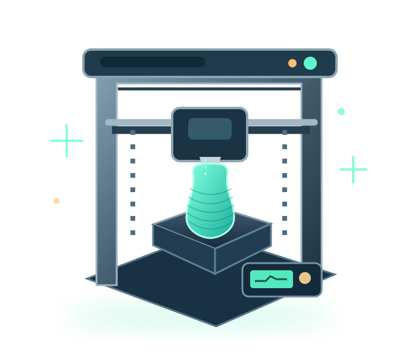

Технологии печати
Узнайте, чем отличаются FDM, SLA и SLS и для чего они подходят.
Подробнее →Твоя точка входа в мир 3D
Понятные материалы о 3D-печати, проверенные базовые настройки и практичные инструменты — от первой модели до готовой детали.

Навигация
Не знаете, с чего начать? Выберите нужный раздел и переходите сразу к делу.
Узнайте, чем отличаются FDM, SLA и SLS и для чего они подходят.
Подробнее →PLA, PETG, ABS, TPU: сравнение свойств и сфер применения.
Подробнее →Пошаговый процесс от подготовки файла до первого успешного слоя.
Подробнее →Оцените расход пластика, электричества и итоговую стоимость детали.
Подробнее →Шесть вопросов по основам 3D-печати с пояснениями.
Подробнее →Наша цель, методика расчётов и принципы размещения материалов.
Подробнее →Практическая польза
Посчитайте бюджет печати, выберите подходящий пластик и сохраните чек-лист подготовки принтера. Всё бесплатно и без регистрации.
Первый маршрут
Простой маршрут для первой готовой модели.
Для большинства домашних задач начальным выбором становится FDM-печать пластиковым филаментом.
Для простых декоративных изделий часто используют PLA, для некоторых функциональных деталей — PETG.
Проверьте ориентацию, поддержки и первый слой до запуска печати.
Воспользуйтесь калькулятором, убедитесь в безопасности рабочего места и наблюдайте за первым слоем.